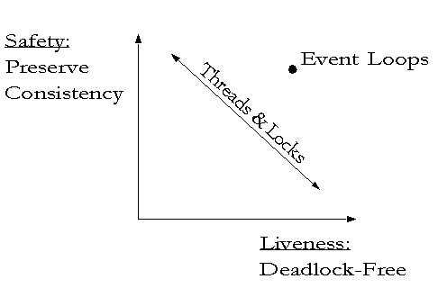

| |
Event
Loop |
||||||
It seems that all capability systems, including E, could have been derived by the following recipe:
-
Start with the Lambda Calculus. This gives us all the properties mentioned here that define a capability system, except that Bob has no way to retain a dynamically acquired reference to Carol.
-
Optional: Add a message dispatch mechanism. Pure lambda calculus is great at defining one-method objects, but your users want to create objects that respond to several different types of request. E provides for this directly in the kernel, but Actors, Scheme, KeyKOS, and EROS show that it need not be primitive.
-
Add object-local mutable memory and side-effects. Bob can now retain his ability to access Carol. There are lots of ways to do this:
-
Smalltalk and Java provide mutable instance variable declarations.
-
Scheme and E provide for mutable memory by lexically binding names, not to values, but to mutable slots (or locations in Scheme) holding values. Slots are a mutable object type primitively provided by both kernels -- if they weren't provided they could not be written in the language.
-
KeyKOS, EROS, and other capability operating systems provide pages of mutable memory as a primitive data type. By squinting hard enough, you can see their similarity to Scheme and E.
-
Actors, Flat Concurrent Prolog, Vulcan, and Joule all define an object as a tail-recursive nano-process, fetching one message at a time from a per-object message queue (i.e., the Actor mailbox). In response to a message, a method specifies what object is to receive the next message from the same mailbox. Typically this is an object just like itself except for different values for some instance variables.
(For more on steps 1, 2, and 3, see this.)
-
-
Much of the charm of pure Lambda Calculus is its blissful ignorance of all issues of time and execution order. Arithmetic is beautifully timeless in the same sense. Unfortunately, once we add side-effects, we have to come to terms with these issues. Solutions that enable us, not only to avoid confusing ourselves with our own side-effects, but to create computation that can interact with an ongoing concurrent world, are termed concurrency-control. [See also On the development of reactive systems by Harel and Pnueli for a similar distinction between transformational and reactive systems.]
The first two problems a concurrency control paradigm must solve are safety -- precautions against confusing ourselves, and liveness -- knowing we can still make progress despite these precautions.
Safety: Preserving Consistency
Even with sequential programs, once we have side-effects, we have many more opportunities to confuse ourselves, and this can get much worse with concurrency. Friedrich Hayek's writings on economics enable us to see the commonality between the problems of concurrency control, pre-object programming, and command economies. All three suffer from plan interference.
Before objects, one part of a program might manipulate shared data in a way that destroys assumptions made by another part of the program -- the left hand not knowing about the right hand and all that. Before objects, there was no reasonable way to keep all these distributed assumptions straight. I remember this happening to me repeatedly while coding the left hand, even if I'd just coded the right hand myself a few days ago. Of course, it only got worse with more people and more time to forget.
Hayek's explanation of the primary virtue of property rights for organizing large scale economic activity parallels the rationale for encapsulation in object-oriented systems: to provide a domain (an object's encapsulation boundary) in which an agent (the object) can execute plans (the object's methods) that use resources (an object's private state), where the proper functioning of these plans depends on these resources not being used simultaneously by conflicting plans. By dividing up the resources of society (the state of a computational system) into separately owned chunks (private object states), we enable a massive number of plans to make use of a massive number of resources without needing to resolve a massive number of conflicting assumptions.
Concurrency introduces a new kind of plan-interference: plan interleaving. Pre-object sequential programs got into trouble just from changes to assumptions between one procedure call and the next. While a procedure call is in progress, the delicacy of assumptions in the air is often much greater. Concurrency means other procedures executing simultaneously can interfere with these delicate assumptions. A simple example in Java:
public class CounterExample { private int myCounter = 0; public int incr() { return myCounter++; } }
The code compiled from myCounter++ makes micro-assumptions. It reads the value of myCounter into a register, increments the register, and writes the new value back out. If two threads call incr() simultaneously, one may overwrite the effect of the other, breaking the counter.
A plan with a stale assumption may proceed to cause damage because its proper functioning depends on facts which are no longer true. Classically, the consistency problem is phrased in terms of preserving object invariants, but it is better to focus on avoiding stale assumptions. Since the plan assumptions most likely to be broken by plan interleaving are in stack-frames, a useful concurrency control slogan is avoid stale stack-frames.
Liveness: Avoiding Deadlock
The thread paradigm attempts to avoid stale assumptions by introducing locking. While one part of the program holds delicate assumptions about another part of the program, it also holds a lock on that other part of the program to keep it from changing out from underneath it. For example, the above Java code would be thread safe as follows:
public class CounterExample { private int myCounter = 0; public int synchronized incr() { return myCounter++; } }
The synchronized keyword means the incr() method must obtain a lock on the counter object as a whole before proceeding into the method body, and that it should release this lock on exit. For this counter, the above code is unproblematic. However, in general the method body will call other methods on other objects. This means the thread will be holding some locks (on objects whose synchronized methods are part-way through execution) while waiting to obtain other locks. This is a formula for deadly embrace. To write correct thread-based programs, one must avoid the possibility of a cyclic locking dependency.
Given the other goals of object oriented programming -- encapsulation, abstraction, composition, and polymorphism -- the interface contract of an abstraction must state everything about its locking behavior needed to use it correctly. This is simply too hard, and very few are able to succeed at it.

A correct program must both preserve consistency and be free of deadlocks. In the thread paradigm, for a complex program composed from separately written modules, if there are enough locks (synchronized methods or whatever) sprinkled around to have a high confidence in the program's safety, there should usually be low confidence in the program's liveness (the upper left corner). If locks are only inserted where their deadlock dangers have been carefully examined, a program that one can afford to write will have too few locks to be confident in its safety. By contrast, you can easily write event-loop programs in which you have high confidence in its safety and its liveness.
Other Liveness Issues
Besides deadlock, there are other kinds of bugs which can prevent a program from making progress. While E doesn't have classic deadlock, it still has these vulnerabilities, some of which resemble deadlock.
Livelock -- infinite loops steal the vat's thread
An infinite loop prevents this incarnation of a vat from ever again making progress, just as it would prevent a conventional thread from making progress. As with conventional threads, it does not prevent other vats (threads) from making progress. Unfortunately, since each E object is in only one vat, livelocking a vat does lock up all objects within a vat. (This would be analogous to livelocking a thread that holds a synchronized lock on several objects.)
Fortunately, for a persistent vat, this locks up only the vat incarnation, not the vat itself. By killing the livelocked incarnation, the vat can roll back to its last checkpoint, be reincarnated, and proceed from there. Unfortunately, this doesn't guarantee that it won't livelock again.
Turing's halting problem demonstrates the ultimate unsolvability of this problem.
Datalock -- recursive data definition with no bottom
This also includes when-catches that are "waiting" (posted as callbacks for) promises that the other would resolve.
Gridlock -- messages need space to move
Technically, this looks like a classic deadlock, but it's caused specifically by lack of outgoing buffers. The distinction between deadlock and gridlock? If more buffer space would have caused you not to have locked up yet, then it's gridlock rather than deadlock.
Lost Signal -- overslept, forgot to set the alarm
An example, due to Mark Seaborn (thanks!): If you have a when-catch "waiting" (posted as a callback) for a promise to be resolved, but in the code that's supposed to resolve it, you forget to call "resolve" in all applicable cases. Of course, actual lost signal bugs may be arbitrarily more complicated than this.
Further Discussion
| Escape from Multithreaded Hell | Stefan Reich's slide presentation pulls together for the first time many aspects of E's concurrency into a single coherent explanation. The original in German. |
The following message by Darius Bacon is a good summary of some further points, with links in its header to a discussion of this topic on the "Lambda" weblog, and links in its body to some good messages on this topic on our own e-lang list.
Re: E - secure,distributed, pure OOP and p2p scripting language
The referenced tutorial is aimed at typical working programmers; I think language hackers would get more out of the main erights.org site. This particular issue is discussed at http://erights.org/elib/concurrency/event-loop.html and pages linked from there. I think the claim of eliminating deadlock bugs is like the claim functional languages make to eliminate side-effect bugs. You can still write code such that the same kind of interference occurs (in both cases), but the language leads you naturally away from it. If this analogy is right, using event-loop concurrency instead of threads should be a good idea a lot of the time even in languages that don't support it, just like avoiding side effects can improve your C code. Zooko wrote about his Mojo Nation experiences along those lines: "[E-Lang] Deadlock-free" Jonathan Rees seems to be the first to make this analogy: "[E-Lang] analogy between "when" and monads" I've never written any concurrent code in E, so my own opinion
isn't worth much. Mark Miller gave a list of other relevant posts:
|
Unless stated otherwise, all text on this page which is either unattributed or by Mark S. Miller is hereby placed in the public domain.
| |
|
report bug (including invalid html)
|
||||||||